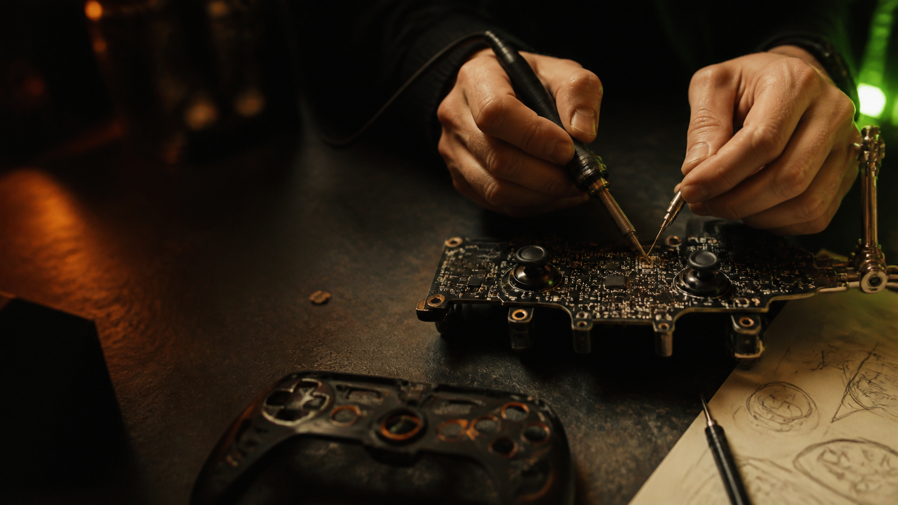
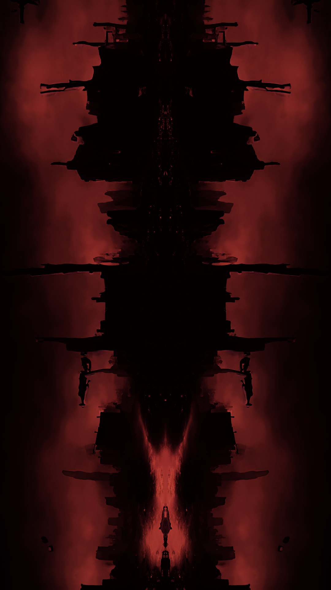
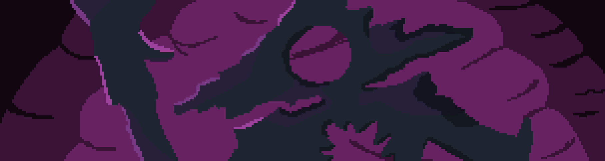

Cofundador
Loop Smiths
Desarrollo de videojuegos y soluciones interactivas.

PERFIL
Estudiante de Licenciatura en Desarrollo de Videojuegos en UADE. Experiencia en desarrollo de videojuegos y en desarrollo web full stack, creando apps web, sitios y soluciones online orientadas a negocios y organizaciones. Apasionado por la tecnología, la creación de experiencias interactivas y la resolución de problemas complejos.
TRAYECTORIA
Ingeniería, automatización y educación tecnológica: distintos campos, una misma forma de pensar sistemas.
Loop Smiths
Desarrollo de videojuegos y soluciones interactivas.
GUIMAGRA S.A
Automatización de procesos para empresas agropecuarias.
Orden de San Agustín (Argentina)
Sitio institucional.
IDS
San Martín de Tours / Paula Montal
APRENDER / CONSTRUIR / COMPARTIR
Universidad Argentina de la Empresa (UADE)
Digital House
Instituto San Martín de Tours
ENGINEERING × DESIGN × SYSTEMS
C++ · C# · JavaScript · HTML5 · CSS3 · JSON
Unreal Engine · Unity · Construct 3 · Arduino · Onshape
Illustrator · Photoshop · Blender · Scrum · Office
Singleton · Factory · Strategy · State · Flyweight · Pool · Abstract Factory · Observer · Facade
MICRO EXPERIENCIA
Mové el cursor o usá las flechas. Capturá la señal.
Una selección de mundos, sistemas y productos digitales.
04 EXPERIENCIAS / DESPLAZÁ →Sitio Web Oficial
Abrir ↗
Juego publicado en Itch.io
Jugar ↗
Juego publicado en Itch.io
Jugar ↗Más proyectos y experimentos
Explorar ↗